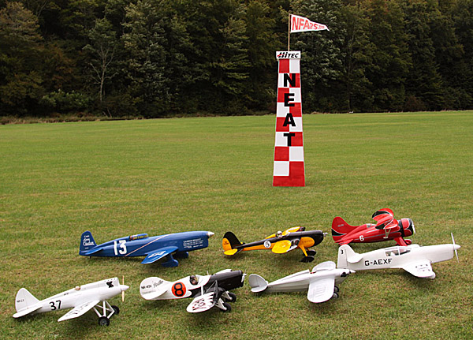

|
Working from original plans drawn based on several three views and many photos, I scratchbuilt my 1:5 scale Caudron C.450 over the spring and summer of 2013. This model isn't done by a long stretch, but that is coming. Fortunately it was airworthy enough to participate in two mid-day demos at the NEAT Fair that fall with the other Golden Age air racers seen below. It was also featured in the SKS video of the 2013 NEAT Fair.
Like all airplanes big or small, it is decidedly a work in progress. There remain numerous details still to come to bring it to a satisfactory stage. I sorted out the balance and flight trim over a few more sessions through the fall of 2013 and added more detailing over the winter. The full scale Caudron C.450 was built in 1934 for France's prestigious 2000km air race, the Coupe Deutsch de la Meurthe, which it won with an average speed of 241.7 mph. In its day, the Caudron C.450 was the fastest plane in the world, with speeds of 268 and 244 mph across distances of 100 and 1000 km respectively, as noted on the starboard cowl panel. My model features built-up wood construction, using balsa and plywood from SIG Mfg and Balsa USA. Physically, the Caudron spans 53 inches, is 57 inches long and the flying weight is 4 pounds, 2 ounces. All control linkages are internal, with carbon fiber pushrods for the tail surfaces and aluminum torque tubes for the aileron and flaps. The base finish is World Models Blue LighTex, formerly known as SIG AeroKote Lite. I also made the tricolore band from LighTex, using white, dark red and dark blue. All other markings are from sign vinyl that I designed and produced with a vinyl cutter. The color scheme and markings replicate the original's appearance at the 1934 Paris Air Show.
I am flying the Caudron using the Hitec Aurora 9, Optima 9 receiver and three Hitec HS-65MG servos on rudder and ailerons. The elevator and flaps each use a Hitec HS-85MG servo. I am using the Optima receiver's Supplementary Power Connection and the Telemetry Voice Module to monitor motor battery voltage in flight. The servos are powered by a Castle Creations CC-BEC. The power system delivers approximately 500 watts, using an O.S. 3820-960 outrunner, Castle Creations ICE Lite 50 ESC and Thunder Power 3S 2700mAh Gen 8 Pro Lite Plus battery. The propeller is an APC 12x6e sporting a Tru-Turn 2.5-inch FAI spinner. |
almost ready to cover |
|---|
2013 NEAT Fair Air Racing Society |
|  |
|
Howard Pete - Zeke Brubaker Gee Bee Model X Sportster - Chris Parent Heath Baby Bullet - Mike Tulley Percival Mew Gull - Tom Hunt
Second Row:
|
|
The NEAT Fair Air Racing Society is a loosely knit group of friends created to promote designing and building practical, every-day sport scale models. We chose the Golden Age air racers as our theme, due to their unique and colorful appeal.
With the exception of Paul's Daddy-O which he built from the Stevens AeroModel kit, all were designed and scratch built by the owners. The Daddy-O is also the only sport model, though it certainly fits right in with these scale models. It was, in fact, the original inspiration for choosing Golden Age racing designs for this group of models. |
Flying at the 2013 NEAT Fair - photo courtesy Micki Bowne |
This image of the original inspired my model and its color scheme. |
Awards:WRAM Show 2015 - Electric Scale - First Place |
|---|
I would like to thank Dave Malchione Jr. for flying the Caudron in July 2014 at Warbirds over Delaware, so that I could photograph it. Note the more finished state seen here and at the top of this page. |
Copyright 2014-2015, Thayer Syme. All rights reserved